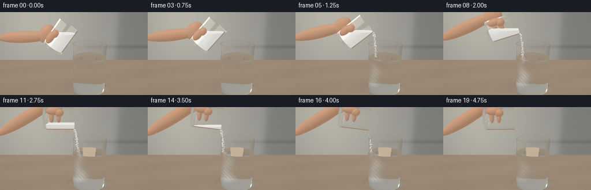
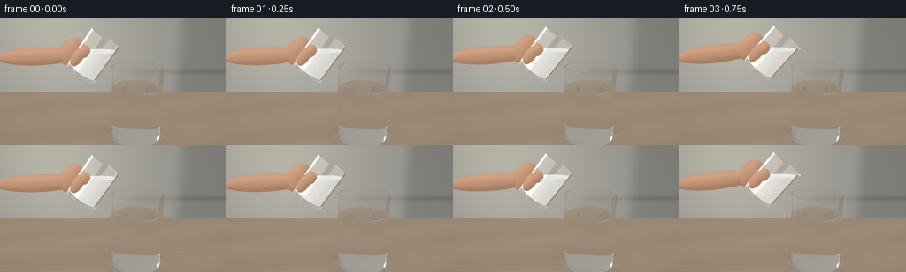

CODING AGENTS AS PIXEL WORLD MODELS
traex/GPT-6.1-Sol · material_0017
点击播放 · 原生 RGB 像素
逐轮保存的候选
回放视频、检查图与代码变化。
每份候选均可单独播放。实际图片检查记录在下方工具轨迹中。
候选 01播放与检查图
点击播放 · 原生 RGB 像素


展开代码变化
--- 上一保存版本
+++ 本次保存版本
@@ -0,0 +1,364 @@
+"""Deterministic analytical glass-and-water rendering; no external assets."""
+from pathlib import Path
+import json, math
+import numpy as np
+from PIL import Image, ImageDraw, ImageFilter
+import artifact_io
+
+ROOT=Path(__file__).resolve().parent
+SPEC=json.loads((ROOT/'task_spec.json').read_text())
+W,H=SPEC['width'],SPEC['height']
+SS=3
+WW,HH=W*SS,H*SS
+DT=np.float32
+rng=np.random.default_rng(21)
+EYE=np.array([0.,3.2,5.7],DT)
+LOOK=np.array([0.,1.55,0.],DT)
+FWD=(LOOK-EYE); FWD/=np.linalg.norm(FWD)
+RIGHT=np.cross(FWD,np.array([0,1,0],DT)); RIGHT/=np.linalg.norm(RIGHT)
+UP=np.cross(RIGHT,FWD)
+FOCAL=255*SS
+xx,yy=np.meshgrid(np.arange(WW)+.5,np.arange(HH)+.5)
+RAYS=FWD+((xx-WW/2)/FOCAL)[...,None]*RIGHT+((HH/2-yy)/FOCAL)[...,None]*UP
+RAYS=RAYS.reshape(-1,3).astype(DT); RAYS/=np.linalg.norm(RAYS,axis=1)[:,None]
+GRAIN=rng.normal(0,.0016,(HH,WW,1)).astype(DT)
+LIGHT=np.array([-3,6,4],DT); LIGHT/=np.linalg.norm(LIGHT)
+TARGET=np.array([.62,0,0],DT)
+WATER=1.43
+
+def smooth(x):
+ x=np.clip(x,0,1); return x*x*(3-2*x)
+
+def pose(t):
+ tilt=np.deg2rad(36+61*smooth((t-.10)/3.35)-8*smooth((t-4.2)/.65))
+ a=np.array([np.sin(tilt),np.cos(tilt),0],DT)
+ b=np.array([np.cos(tilt),-np.sin(tilt),0],DT)
+ mouth=np.array([-.18+.20*smooth(t/2.8)-.12*smooth((t-4.2)/.6),2.70+.05*np.sin(t*.8)+.07*smooth((t-4.1)/.6),.03],DT)
+ base=mouth-1.12*a
+ lip=mouth+.408*b
+ return a,b,base,mouth,lip
+
+# A deterministic cloud of points allows a powder's horizontal surface to
+# follow gravity rather than unrealistically rotating with its container.
+u=rng.random(26000)
+r=.378*np.sqrt(rng.random(26000)); az=rng.uniform(0,2*np.pi,26000)
+POWDER_SAMPLES=np.stack([r*np.cos(az),.09+1.01*u,r*np.sin(az)],axis=1).astype(DT)
+
+
+def background(o,d):
+ n=len(d)
+ # Out-of-focus plaster wall and a few very soft architectural bands.
+ tz=(-3.8-o[:,2])/np.where(np.abs(d[:,2])>1e-7,d[:,2],1e-7)
+ wall=o+np.maximum(tz,0)[:,None]*d
+ wx,wy=wall[:,0],wall[:,1]
+ glow=np.exp(-((wx+2.6)/3.4)**2-((wy-3.7)/4.8)**2)
+ col=np.empty((n,3),DT)
+ col[:]=[.305,.30,.276]
+ col+=glow[:,None]*np.array([.19,.175,.132],DT)
+ # Blurred cabinetry on the far right.
+ edge=.5+.5*np.tanh((wx-2.8)/.23)
+ col-=edge[:,None]*np.array([.09,.085,.077])
+ band=np.exp(-((wy-.92)/.12)**2)*(.5+.5*np.tanh((wx-.8)/.45))
+ col-=band[:,None]*.048
+ # Broad rectangular studio windows visible as highlights in the glass.
+ win=(.5+.5*np.tanh((d[:,0]+.93)/.018))*(.5+.5*np.tanh((-.34-d[:,0])/.018))
+ win*= (.5+.5*np.tanh((d[:,1]-.06)/.015))*(.5+.5*np.tanh((.86-d[:,1])/.018))
+ col+=win[:,None]*np.array([1.7,1.65,1.48])
+ strip=np.exp(-((d[:,0]-.75)/.028)**8)*np.exp(-((d[:,1]-.40)/.45)**8)
+ col+=strip[:,None]*np.array([.9,.97,1.1])
+ # Table; micrograin has low contrast so the clear vessel remains legible.
+ tt=-o[:,1]/np.where(np.abs(d[:,1])>1e-7,d[:,1],1e-7)
+ table=(tt>1e-5)&((tz<=0)|(tt<tz))
+ if np.any(table):
+ p=o[table]+tt[table,None]*d[table]
+ x,z=p[:,0],p[:,2]
+ wav=np.sin(z*53+1.3*np.sin(x*1.7)+.7*np.sin(z*7))
+ fine=np.sin(z*160+x*5)*np.sin(x*59-z*8)
+ broad=np.sin(z*2.8+x*.8)
+ wood=.008*wav+.0024*fine+.008*broad
+ c=np.tile(np.array([.335,.256,.183],DT),(len(p),1))
+ c+=wood[:,None]*np.array([1,.88,.7])
+ # Diffuse contact shadow and a faint, broad caustic beneath the water.
+ shadow=np.exp(-((x-.62)/.75)**2-(z/.42)**2)
+ c*=1-.27*shadow[:,None]
+ caustic=np.exp(-((np.sqrt(((x-.65)/.72)**2+((z-.08)/.32)**2)-1)/.17)**2)
+ c+=caustic[:,None]*np.array([.029,.035,.035])
+ c*= (1-.055*np.clip(z/5,0,1))[:,None]
+ col[table]=c
+ return np.clip(col,0,3)
+
+class Scene:
+ def __init__(self,t):
+ self.t=t
+ self.a,self.b,self.base,self.mouth,self.lip=pose(t)
+ self.glasses=[(TARGET,np.array([0,1,0],DT),.672,.622,1.96,.10),
+ (self.base,self.a,.419,.382,1.12,.085)]
+ fraction=.61*(1-smooth((t-.55)/3.55))
+ heights=self.base[1]+POWDER_SAMPLES[:,0]*self.b[1]+POWDER_SAMPLES[:,1]*self.a[1]
+ self.salt_level=float(np.quantile(heights,max(.002,fraction))) if fraction>.008 else -100
+ # A hand entering from offscreen: palm, connected wrist, fingers behind
+ # the bowl, and a softly rounded thumb resting against its near side.
+ a,b=self.a,self.b
+ grip=self.base+.39*a
+ self.skin=[]
+ def ell(c,ax,by,cz,basis=None):
+ B=np.stack([b,a,np.array([0,0,1],DT)],axis=1) if basis is None else basis
+ self.skin.append((np.array(c,DT),B,np.array([ax,by,cz],DT)))
+ # Position the palm behind the glass so the powder is never obscured.
+ ell(grip-.51*b-.10*a-np.array([0,0,.16]),.28,.40,.19)
+ wrist_end=grip-.53*b-.23*a-np.array([0,0,.19])
+ wrist_start=np.array([-2.8,2.17+.07*smooth(t/3),-.10],DT)
+ direction=wrist_end-wrist_start; le=np.linalg.norm(direction); direction/=le
+ zaxis=np.array([0,0,1],DT); side=np.cross(direction,zaxis); side/=np.linalg.norm(side)
+ bas=np.stack([side,direction,zaxis],axis=1)
+ ell((wrist_start+wrist_end)/2,.235,le*.66,.19,bas)
+ # Index and middle fingers curl around the far rim of the small glass.
+ for along in [.47,.19]:
+ ell(self.base+along*a-.34*b-np.array([0,0,.21]),.15,.155,.19)
+ ell(self.base+(along+.015)*a-.08*b-np.array([0,0,.36]),.29,.097,.105)
+ # Visible thumb with a continuous rounded pad.
+ ell(self.base+.38*a-.285*b+np.array([0,0,.29]),.145,.27,.135)
+ ell(self.base+.58*a-.23*b+np.array([0,0,.32]),.14,.16,.12)
+
+ def material(self,p):
+ out=np.ones(len(p),DT)
+ for j,(base,a,ro,ri,h,bot) in enumerate(self.glasses):
+ v=p-base; y=v@a; radial=v-y[:,None]*a; r2=np.sum(radial*radial,axis=1)
+ inside=(y>0)&(y<h)&(r2<ro*ro)
+ shell=inside&((r2>ri*ri)|(y<bot))
+ out[shell]=1.51
+ if j==0:
+ water=inside&(r2<ri*ri)&(y>=bot)&(y<WATER)
+ out[water]=1.333
+ return out
+
+ def intersect(self,o,d):
+ n=len(o); nearest=np.full(n,np.inf,DT); normals=np.zeros((n,3),DT); tags=np.zeros(n,np.int8)
+ def update(ts,ns,valid,tag):
+ valid=valid&(ts>2e-5)&(ts<nearest)
+ nearest[valid]=ts[valid]; normals[valid]=ns[valid]; tags[valid]=tag
+ def cyl(base,a,rad,lo,hi,tag,sgn=1,clip_salt=False):
+ v=o-base; ov=v@a; dv=d@a
+ op=v-ov[:,None]*a; dp=d-dv[:,None]*a
+ aa=np.sum(dp*dp,axis=1); bb=np.sum(op*dp,axis=1)
+ cc=np.sum(op*op,axis=1)-rad*rad
+ disc=bb*bb-aa*cc; sq=np.sqrt(np.maximum(disc,0))
+ for sign in [-1,1]:
+ ts=(-bb+sign*sq)/np.maximum(aa,1e-10)
+ yy=ov+ts*dv
+ good=(disc>=0)&(yy>=lo)&(yy<=hi)
+ q=op+ts[:,None]*dp
+ ns=sgn*q/rad
+ if clip_salt: good&=(o[:,1]+ts*d[:,1]<=self.salt_level)
+ update(ts,ns,good,tag)
+ def disc(base,a,level,ro,ri,tag,sgn,clip_salt=False):
+ v=o-base; den=d@a
+ ts=(level-v@a)/np.where(np.abs(den)>1e-9,den,1e-9)
+ q=v+ts[:,None]*d-level*a
+ rr=np.sum(q*q,axis=1)
+ good=(rr<=ro*ro)&(rr>=ri*ri)&(np.abs(den)>1e-9)
+ if clip_salt: good&=(o[:,1]+ts*d[:,1]<=self.salt_level)
+ update(ts,np.broadcast_to(a*sgn,(n,3)),good,tag)
+ for idx,(base,a,ro,ri,h,bot) in enumerate(self.glasses):
+ cyl(base,a,ro,0,h,1)
+ cyl(base,a,ri,bot,h,1,-1)
+ disc(base,a,0,ro,0,1,-1)
+ disc(base,a,bot,ri,0,1,1)
+ disc(base,a,h,ro,ri,1,1)
+ # Nearly flat water surface; its optical normal carries tiny ripples.
+ ts=(WATER-o[:,1])/np.where(np.abs(d[:,1])>1e-9,d[:,1],1e-9)
+ p=o+ts[:,None]*d
+ good=((p[:,0]-.62)**2+p[:,2]**2<.6218**2)
+ ns=np.zeros((n,3),DT); ns[:,1]=1
+ if self.t>.7:
+ rr=np.sqrt((p[:,0]-.30)**2+(p[:,2]-.03)**2)+1e-5
+ amp=.011*smooth((self.t-.65)/.6)*(1-.55*smooth((self.t-4)/.7))
+ slopes=amp*np.cos(rr*38-self.t*17)*np.exp(-rr*3)
+ ns[:,0]=slopes*(p[:,0]-.30)/rr; ns[:,2]=slopes*(p[:,2]-.03)/rr
+ ns/=np.linalg.norm(ns,axis=1)[:,None]
+ update(ts,ns,good,2)
+ if self.salt_level>-10:
+ base,a,ro,ri,h,bot=self.glasses[1]
+ cyl(base,a,ri-.001,bot+.001,h,3,1,True)
+ disc(base,a,bot+.001,ri-.001,0,3,-1,True)
+ disc(base,a,h,ri-.001,0,3,1,True)
+ # Horizontal free surface clipped by the moving cylindrical cup.
+ ts=(self.salt_level-o[:,1])/np.where(np.abs(d[:,1])>1e-9,d[:,1],1e-9)
+ p=o+ts[:,None]*d; v=p-base; y=v@a; r2=np.sum((v-y[:,None]*a)**2,axis=1)
+ good=(y>=bot+.001)&(y<=h)&(r2<(ri-.001)**2)
+ update(ts,np.broadcast_to(np.array([0,1,0],DT),(n,3)),good,3)
+ for c,basis,scales in self.skin:
+ v=(o-c)@basis/scales; dd=d@basis/scales
+ aa=np.sum(dd*dd,axis=1); bb=np.sum(v*dd,axis=1); cc=np.sum(v*v,axis=1)-1
+ det=bb*bb-aa*cc; sq=np.sqrt(np.maximum(det,0))
+ ts=(-bb-sq)/np.maximum(aa,1e-8)
+ local=(v+ts[:,None]*dd)/scales
+ ns=local@basis.T; ns/=np.maximum(np.linalg.norm(ns,axis=1)[:,None],1e-8)
+ update(ts,ns,det>=0,4)
+ return nearest,normals,tags
+
+ def opaque(self,p,n,d,tag):
+ cosine=np.maximum(0,n@LIGHT)
+ if tag==3:
+ # Random-looking crystalline facets from deterministic 3D hashes.
+ cell=np.floor(p*270)
+ noise=np.mod(np.sin(cell@np.array([12.9898,78.233,37.719],DT))*43758.5453,1)
+ f=.66+.22*cosine+.16*noise
+ glint=np.maximum(0,n@((LIGHT-d)/np.linalg.norm(LIGHT-d,axis=1)[:,None]).T) if False else 0
+ return f[:,None]*np.array([.96,.949,.91],DT)
+ # Warm skin with diffuse shading, fine texture, a modest oily sheen.
+ diff=.59+.41*cosine
+ halfv=LIGHT-d; halfv/=np.linalg.norm(halfv,axis=1)[:,None]
+ shine=np.maximum(0,np.sum(n*halfv,axis=1))**28*.035
+ tex=.010*np.sin(p[:,0]*161+p[:,1]*101)*np.sin(p[:,2]*173)
+ c=(diff+tex)[:,None]*np.array([.66,.365,.225],DT)
+ c+=shine[:,None]*np.array([1,.87,.70])
+ return c
+
+ def render(self):
+ n=len(RAYS)
+ color=np.zeros((n,3),DT); weight=np.ones((n,3),DT)
+ inds=np.arange(n); o=np.broadcast_to(EYE,(n,3)).copy(); d=RAYS.copy(); medium=np.ones(n,DT)
+ for bounce in range(11):
+ if not len(inds): break
+ distance,normal,tag=self.intersect(o,d)
+ hits=tag>0
+ # Light absorption and the softly swirling, dissolving salt plume.
+ wet=medium<1.40
+ wet&=medium>1.2
+ if np.any(wet):
+ length=np.minimum(distance[wet],2)
+ p=o[wet]+d[wet]*length[:,None]*.5
+ weight[inds[wet]]*=np.exp(-length[:,None]*np.array([.028,.010,.006],DT))
+ activity=smooth((self.t-.8)/.8)*(1-.65*smooth((self.t-3.7)/1.1))
+ depth=np.clip(WATER-p[:,1],0,1.4)
+ cx=.28+.065*np.sin(depth*7-self.t*2)
+ width=.065+.09*depth+.016*self.t
+ core=np.exp(-((p[:,0]-cx)/width)**2-((p[:,2]-.025)/(.08+.10*depth))**2)
+ eddy=.55+.45*np.sin(p[:,1]*19+p[:,0]*24+self.t*2.5)**2
+ density=.48*activity*core*eddy*(.5+depth)
+ opacity=1-np.exp(-length*density)
+ wi=inds[wet]
+ color[wi]+=weight[wi]*opacity[:,None]*np.array([.68,.70,.66],DT)
+ weight[wi]*=(1-opacity)[:,None]
+ miss=~hits
+ if np.any(miss): color[inds[miss]]+=weight[inds[miss]]*background(o[miss],d[miss])
+ opaque=hits&(tag>=3)
+ if np.any(opaque):
+ p=o[opaque]+distance[opaque,None]*d[opaque]
+ for k in [3,4]:
+ sel=tag[opaque]==k
+ ids=inds[opaque][sel]
+ color[ids]+=weight[ids]*self.opaque(p[sel],normal[opaque][sel],d[opaque][sel],k)
+ trans=hits&(tag<3)
+ if not np.any(trans): break
+ inds=inds[trans]; p=o[trans]+distance[trans,None]*d[trans]
+ d=d[trans]; norm=normal[trans]
+ n1=medium[trans]
+ n2=self.material(p+d*1e-4)
+ flip=np.sum(d*norm,axis=1)>0
+ norm[flip]*=-1
+ cosi=-np.sum(d*norm,axis=1)
+ ratio=n1/n2
+ k=1-ratio*ratio*(1-cosi*cosi)
+ tir=k<0
+ r0=((n1-n2)/(n1+n2))**2
+ fres=r0+(1-r0)*(1-cosi)**5
+ fres[tir]=1
+ reflected=d+2*cosi[:,None]*norm
+ # Analytic surroundings supply the broad window reflection.
+ reflection=background(p+norm*1e-4,reflected)
+ color[inds]+=weight[inds]*fres[:,None]*reflection
+ weight[inds]*=(1-fres)[:,None]
+ nd=ratio[:,None]*d+(ratio*cosi-np.sqrt(np.maximum(0,k)))[:,None]*norm
+ nd[tir]=reflected[tir]
+ # Total internal reflection should preserve energy into another ray.
+ if np.any(tir):
+ # TIR is already approximated by a room reflection, terminate it.
+ weight[inds[tir]]=0
+ nd/=np.maximum(np.linalg.norm(nd,axis=1)[:,None],1e-8)
+ keep=(np.max(weight[inds],axis=1)>.004)&(~tir)
+ inds=inds[keep]; d=nd[keep]; o=p[keep]+d*1e-4; medium=n2[keep]
+ if len(inds): color[inds]+=weight[inds]*background(o,d)
+ image=color.reshape(HH,WW,3)
+ return image
+
+def project(p):
+ v=np.asarray(p)-EYE
+ z=v@FWD
+ return np.stack([WW/2+FOCAL*(v@RIGHT)/z,HH/2-FOCAL*(v@UP)/z],axis=-1),z
+
+# Fixed emission schedule makes the trickle temporally coherent.
+EMIT=np.arange(.68,4.0,1/330)
+PRNG=np.random.default_rng(71)
+PART_NOISE=PRNG.normal(0,1,(len(EMIT),7))
+PART_R=PRNG.uniform(.006,.012,len(EMIT))
+
+def particles(t):
+ layer=Image.new('RGBA',(WW,HH),(0,0,0,0)); draw=ImageDraw.Draw(layer)
+ # Each grain has a ballistic trajectory in air and slows upon entering water.
+ for i,born in enumerate(EMIT):
+ age=t-born
+ if age<0 or age>1.15: continue
+ strength=1-smooth((born-3.4)/.6)
+ if PART_NOISE[i,5]*.20+.5>strength: continue
+ a,b,base,mouth,lip=pose(float(born))
+ no=PART_NOISE[i]
+ start=lip+np.array([no[0]*.018,-.012,no[1]*.026],DT)
+ vx=.23+.045*no[2]
+ vy=-.13
+ falltime=(vy+np.sqrt(vy*vy+2*9.8*max(.05,start[1]-WATER)))/9.8
+ if age<falltime:
+ p=start+np.array([vx*age,vy*age-4.9*age*age,no[3]*.045*age],DT)
+ alpha=245
+ else:
+ under=age-falltime
+ if under>.65: continue
+ p=start+np.array([vx*falltime+.022*np.sin(under*7+no[4]),WATER-start[1]-.22*under-.48*under*under,no[3]*.045*falltime],DT)
+ alpha=int(145*np.exp(-under*3.0))
+ xy,z=project(p)
+ rad=FOCAL*PART_R[i]/z
+ x,y=xy
+ # Mild elongation gives small individual crystal streaks, not a liquid jet.
+ ry=rad*(1.25 if age<falltime else 1.0)
+ hue=int(np.clip(233+no[6]*10,213,255))
+ draw.ellipse((x-rad-.18,y-ry+.35,x+rad+.18,y+ry+.6),fill=(128,128,114,alpha//3))
+ draw.ellipse((x-rad,y-ry,x+rad,y+ry),fill=(hue,hue,max(0,hue-6),alpha))
+ # A few concentric, soft elliptical ripples visible on the water surface.
+ rip=Image.new('RGBA',(WW,HH),(0,0,0,0)); rd=ImageDraw.Draw(rip)
+ if .9<t<4.5:
+ for j in range(3):
+ radius=.10+((t*1.1+j*.19)% .56)
+ theta=np.linspace(0,2*np.pi,110)
+ p=np.stack([.28+radius*np.cos(theta),np.full_like(theta,WATER+.002),.025+radius*np.sin(theta)],axis=1)
+ good=(p[:,0]-.62)**2+p[:,2]**2<.59**2
+ coords,_=project(p)
+ opacity=int(27*(1-radius/.8)*(1-.6*smooth((t-3.8)/.7)))
+ # Draw only arcs inside the glass's circular opening.
+ for k in range(len(theta)-1):
+ if good[k] and good[k+1]:
+ rd.line([tuple(coords[k]),tuple(coords[k+1])],fill=(235,244,240,opacity),width=SS//2)
+ return layer,rip
+
+def main():
+ frames=[]
+ for f in range(SPEC['frames']):
+ t=f/SPEC['fps']
+ scene=Scene(t)
+ lin=scene.render()
+ # Soft photographic rolloff, standard RGB output.
+ lin=np.clip(lin,0,1)
+ srgb=np.where(lin<=.0031308,12.92*lin,1.055*lin**(1/2.4)-.055)
+ vign=1-.055*(((xx-WW*.49)/(WW*.75))**2+((yy-HH*.52)/(HH*.85))**2)
+ srgb=np.clip(srgb*vign[...,None]+GRAIN,0,1)
+ image=Image.fromarray((srgb*255+.5).astype(np.uint8),'RGB').convert('RGBA')
+ grains,ripple=particles(t)
+ image=Image.alpha_composite(image,ripple)
+ image=Image.alpha_composite(image,grains)
+ image=image.convert('RGB').resize((W,H),Image.Resampling.LANCZOS)
+ frames.append(np.asarray(image,dtype=np.uint8))
+ print(f'frame {f+1}/{SPEC["frames"]}',flush=True)
+ artifact_io.save(np.stack(frames),ROOT)
+ print('Saved RGB video and inspection artifacts.',flush=True)
+
+if __name__=='__main__': main()
可观测工具轨迹
实际执行的命令与返回图片。
命令 1exit 0
/bin/bash -lc "ls -la && cat prompt.txt && printf '\\n---RULES---\\n' && cat GENERATION_RULES.md && printf '\\n---SPEC---\\n' && cat task_spec.json"
命令 2exit 0
/bin/bash -lc "cat artifact_io.py && python - <<'PY' import importlib.util for m in ['numpy','PIL','scipy','cv2']: print(m, bool(importlib.util.find_spec(m))) PY"
命令 3exit 0
/bin/bash -lc "OPENBLAS_NUM_THREADS=1 python - <<'PY' from generate import Scene for t in [0,.5,1,1.5,2,2.5,3,3.5,4,4.75]: s=Scene(t) print(t,'lip',s.lip.round(2),'salt top',round(s.salt_level,2)) PY"
命令 4exit 0
/bin/bash -lc "cat > generate.py <<'PY'
\"\"\"Deterministic analytical glass-and-water rendering; no external assets.\"\"\"
from pathlib import Path
import json, math
import numpy as np
from PIL import Image, ImageDraw, ImageFilter
import artifact_io
ROOT=Path(__file__).resolve().parent
SPEC=json.loads((ROOT/'task_spec.json').read_text())
W,H=SPEC['width'],SPEC['height']
SS=3
WW,HH=W*SS,H*SS
DT=np.float32
rng=np.random.default_rng(21)
EYE=np.array([0.,3.2,5.7],DT)
LOOK=np.array([0.,1.55,0.],DT)
FWD=(LOOK-EYE); FWD/=np.linalg.norm(FWD)
RIGHT=np.cross(FWD,np.array([0,1,0],DT)); RIGHT/=np.linalg.norm(RIGHT)
UP=np.cross(RIGHT,FWD)
FOCAL=255*SS
xx,yy=np.meshgrid(np.arange(WW)+.5,np.arange(HH)+.5)
RAYS=FWD+((xx-WW/2)/FOCAL)[...,None]*RIGHT+((HH/2-yy)/FOCAL)[...,None]*UP
RAYS=RAYS.reshape(-1,3).astype(DT); RAYS/=np.linalg.norm(RAYS,axis=1)[:,None]
GRAIN=rng.normal(0,.0016,(HH,WW,1)).astype(DT)
LIGHT=np.array([-3,6,4],DT); LIGHT/=np.linalg.norm(LIGHT)
TARGET=np.array([.62,0,0],DT)
WATER=1.43
def smooth(x):
x=np.clip(x,0,1); return x*x*(3-2*x)
def pose(t):
tilt=np.deg2rad(36+61*smooth((t-.10)/3.35)-8*smooth((t-4.2)/.65))
a=np.array([np.sin(tilt),np.cos(tilt),0],DT)
b=np.array([np.cos(tilt),-np.sin(tilt),0],DT)
mouth=np.array([-.18+.20*smooth(t/2.8)-.12*smooth((t-4.2)/.6),2.70+.05*np.sin(t*.8)+.07*smooth((t-4.1)/.6),.03],DT)
base=mouth-1.12*a
lip=mouth+.408*b
return a,b,base,mouth,lip
# A deterministic cloud of points allows a powder's horizontal surface to
# follow gravity rather than unrealistically rotating with its container.
u=rng.random(26000)
r=.378*np.sqrt(rng.random(26000)); az=rng.uniform(0,2*np.pi,26000)
POWDER_SAMPLES=np.stack([r*np.cos(az),.09+1.01*u,r*np.sin(az)],axis=1).astype(DT)
def background(o,d):
n=len(d)
# Out-of-focus plaster wall and a few very soft architectural bands.
tz=(-3.8-o[:,2])/np.where(np.abs(d[:,2])>1e-7,d[:,2],1e-7)
wall=o+np.maximum(tz,0)[:,None]*d
wx,wy=wall[:,0],wall[:,1]
glow=np.exp(-((wx+2.6)/3.4)**2-((wy-3.7)/4.8)**2)
col=np.empty((n,3),DT)
col[:]=[.305,.30,.276]
col+=glow[:,None]*np.array([.19,.175,.132],DT)
# Blurred cabinetry on the far right.
edge=.5+.5*np.tanh((wx-2.8)/.23)
col-=edge[:,None]*np.array([.09,.085,.077])
band=np.exp(-((wy-.92)/.12)**2)*(.5+.5*np.tanh((wx-.8)/.45))
col-=band[:,None]*.048
# Broad rectangular studio windows visible as highlights in the glass.
win=(.5+.5*np.tanh((d[:,0]+.93)/.018))*(.5+.5*np.tanh((-.34-d[:,0])/.018))
win*= (.5+.5*np.tanh((d[:,1]-.06)/.015))*(.5+.5*np.tanh((.86-d[:,1])/.018))
col+=win[:,None]*np.array([1.7,1.65,1.48])
strip=np.exp(-((d[:,0]-.75)/.028)**8)*np.exp(-((d[:,1]-.40)/.45)**8)
col+=strip[:,None]*np.array([.9,.97,1.1])
# Table; micrograin has low contrast so the clear vessel remains legible.
tt=-o[:,1]/np.where(np.abs(d[:,1])>1e-7,d[:,1],1e-7)
table=(tt>1e-5)&((tz<=0)|(tt<tz))
if np.any(table):
p=o[table]+tt[table,None]*d[table]
x,z=p[:,0],p[:,2]
wav=np.sin(z*53+1.3*np.sin(x*1.7)+.7*np.sin(z*7))
fine=np.sin(z*160+x*5)*np.sin(x*59-z*8)
broad=np.sin(z*2.8+x*.8)
wood=.008*wav+.0024*fine+.008*broad
c=np.tile(np.array([.335,.256,.183],DT),(len(p),1))
c+=wood[:,None]*np.array([1,.88,.7])
# Diffuse contact shadow and a faint, broad caustic beneath the water.
shadow=np.exp(-((x-.62)/.75)**2-(z/.42)**2)
c*=1-.27*shadow[:,None]
caustic=np.exp(-((np.sqrt(((x-.65)/.72)**2+((z-.08)/.32)**2)-1)/.17)**2)
c+=caustic[:,None]*np.array([.029,.035,.035])
c*= (1-.055*np.clip(z/5,0,1))[:,None]
col[table]=c
return np.clip(col,0,3)
class Scene:
def __init__(self,t):
self.t=t
self.a,self.b,self.base,self.mouth,self.lip=pose(t)
self.glasses=[(TARGET,np.array([0,1,0],DT),.672,.622,1.96,.10),
(self.base,self.a,.419,.382,1.12,.085)]
fraction=.61*(1-smooth((t-.55)/3.55))
heights=self.base[1]+POWDER_SAMPLES[:,0]*self.b[1]+POWDER_SAMPLES[:,1]*self.a[1]
self.salt_level=float(np.quantile(heights,max(.002,fraction))) if fraction>.008 else -100
# A hand entering from offscreen: palm, connected wrist, fingers behind
# the bowl, and a softly rounded thumb resting against its near side.
a,b=self.a,self.b
grip=self.base+.39*a
self.skin=[]
def ell(c,ax,by,cz,basis=None):
B=np.stack([b,a,np.array([0,0,1],DT)],axis=1) if basis is None else basis
self.skin.append((np.array(c,DT),B,np.array([ax,by,cz],DT)))
# Position the palm behind the glass so the powder is never obscured.
ell(grip-.51*b-.10*a-np.array([0,0,.16]),.28,.40,.19)
wrist_end=grip-.53*b-.23*a-np.array([0,0,.19])
wrist_start=np.array([-2.8,2.17+.07*smooth(t/3),-.10],DT)
direction=wrist_end-wrist_start; le=np.linalg.norm(direction); direction/=le
zaxis=np.array([0,0,1],DT); side=np.cross(direction,zaxis); side/=np.linalg.norm(side)
bas=np.stack([side,direction,zaxis],axis=1)
ell((wrist_start+wrist_end)/2,.235,le*.66,.19,bas)
# Index and middle fingers curl around the far rim of the small glass.
for along in [.47,.19]:
ell(self.base+along*a-.34*b-np.array([0,0,.21]),.15,.155,.19)
ell(self.base+(along+.015)*a-.08*b-np.array([0,0,.36]),.29,.097,.105)
# Visible thumb with a continuous rounded pad.
ell(self.base+.38*a-.285*b+np.array([0,0,.29]),.145,.27,.135)
ell(self.base+.58*a-.23*b+np.array([0,0,.32]),.14,.16,.12)
def material(self,p):
out=np.ones(len(p),DT)
for j,(base,a,ro,ri,h,bot) in enumerate(self.glasses):
v=p-base; y=v@a; radial=v-y[:,None]*a; r2=np.sum(radial*radial,axis=1)
inside=(y>0)&(y<h)&(r2<ro*ro)
shell=inside&((r2>ri*ri)|(y<bot))
out[shell]=1.51
if j==0:
water=inside&(r2<ri*ri)&(y>=bot)&(y<WATER)
out[water]=1.333
return out
def intersect(self,o,d):
n=len(o); nearest=np.full(n,np.inf,DT); normals=np.zeros((n,3),DT); tags=np.zeros(n,np.int8)
def update(ts,ns,valid,tag):
valid=valid&(ts>2e-5)&(ts<nearest)
nearest[valid]=ts[valid]; normals[valid]=ns[valid]; tags[valid]=tag
def cyl(base,a,rad,lo,hi,tag,sgn=1,clip_salt=False):
v=o-base; ov=v@a; dv=d@a
op=v-ov[:,None]*a; dp=d-dv[:,None]*a
aa=np.sum(dp*dp,axis=1); bb=np.sum(op*dp,axis=1)
cc=np.sum(op*op,axis=1)-rad*rad
disc=bb*bb-aa*cc; sq=np.sqrt(np.maximum(disc,0))
for sign in [-1,1]:
ts=(-bb+sign*sq)/np.maximum(aa,1e-10)
yy=ov+ts*dv
good=(disc>=0)&(yy>=lo)&(yy<=hi)
q=op+ts[:,None]*dp
ns=sgn*q/rad
if clip_salt: good&=(o[:,1]+ts*d[:,1]<=self.salt_level)
update(ts,ns,good,tag)
def disc(base,a,level,ro,ri,tag,sgn,clip_salt=False):
v=o-base; den=d@a
ts=(level-v@a)/np.where(np.abs(den)>1e-9,den,1e-9)
q=v+ts[:,None]*d-level*a
rr=np.sum(q*q,axis=1)
good=(rr<=ro*ro)&(rr>=ri*ri)&(np.abs(den)>1e-9)
if clip_salt: good&=(o[:,1]+ts*d[:,1]<=self.salt_level)
update(ts,np.broadcast_to(a*sgn,(n,3)),good,tag)
for idx,(base,a,ro,ri,h,bot) in enumerate(self.glasses):
cyl(base,a,ro,0,h,1)
cyl(base,a,ri,bot,h,1,-1)
disc(base,a,0,ro,0,1,-1)
disc(base,a,bot,ri,0,1,1)
disc(base,a,h,ro,ri,1,1)
# Nearly flat water surface; its optical normal carries tiny ripples.
ts=(WATER-o[:,1])/np.where(np.abs(d[:,1])>1e-9,d[:,1],1e-9)
p=o+ts[:,None]*d
good=((p[:,0]-.62)**2+p[:,2]**2<.6218**2)
ns=np.zeros((n,3),DT); ns[:,1]=1
if self.t>.7:
rr=np.sqrt((p[:,0]-.30)**2+(p[:,2]-.03)**2)+1e-5
amp=.011*smooth((self.t-.65)/.6)*(1-.55*smooth((self.t-4)/.7))
slopes=amp*np.cos(rr*38-self.t*17)*np.exp(-rr*3)
ns[:,0]=slopes*(p[:,0]-.30)/rr; ns[:,2]=slopes*(p[:,2]-.03)/rr
ns/=np.linalg.norm(ns,axis=1)[:,None]
update(ts,ns,good,2)
if self.salt_level>-10:
base,a,ro,ri,h,bot=self.glasses[1]
cyl(base,a,ri-.001,bot+.001,h,3,1,True)
disc(base,a,bot+.001,ri-.001,0,3,-1,True)
disc(base,a,h,ri-.001,0,3,1,True)
# Horizontal free surface clipped by the moving cylindrical cup.
ts=(self.salt_level-o[:,1])/np.where(np.abs(d[:,1])>1e-9,d[:,1],1e-9)
p=o+ts[:,None]*d; v=p-base; y=v@a; r2=np.sum((v-y[:,None]*a)**2,axis=1)
good=(y>=bot+.001)&(y<=h)&(r2<(ri-.001)**2)
update(ts,np.broadcast_to(np.array([0,1,0],DT),(n,3)),good,3)
for c,basis,scales in self.skin:
v=(o-c)@basis/scales; dd=d@basis/scales
aa=np.sum(dd*dd,axis=1); bb=np.sum(v*dd,axis=1); cc=np.sum(v*v,axis=1)-1
det=bb*bb-aa*cc; sq=np.sqrt(np.maximum(det,0))
ts=(-bb-sq)/np.maximum(aa,1e-8)
local=(v+ts[:,None]*dd)/scales
ns=local@basis.T; ns/=np.maximum(np.linalg.norm(ns,axis=1)[:,None],1e-8)
update(ts,ns,det>=0,4)
return nearest,normals,tags
def opaque(self,p,n,d,tag):
cosine=np.maximum(0,n@LIGHT)
if tag==3:
# Random-looking crystalline facets from deterministic 3D hashes.
cell=np.floor(p*270)
noise=np.mod(np.sin(cell@np.array([12.9898,78.233,37.719],DT))*43758.5453,1)
f=.66+.22*cosine+.16*noise
glint=np.maximum(0,n@((LIGHT-d)/np.linalg.norm(LIGHT-d,axis=1)[:,None]).T) if False else 0
return f[:,None]*np.array([.96,.949,.91],DT)
# Warm skin with diffuse shading, fine texture, a modest oily sheen.
diff=.59+.41*cosine
halfv=LIGHT-d; halfv/=np.linalg.norm(halfv,axis=1)[:,None]
shine=np.maximum(0,np.sum(n*halfv,axis=1))**28*.035
tex=.010*np.sin(p[:,0]*161+p[:,1]*101)*np.sin(p[:,2]*173)
c=(diff+tex)[:,None]*np.array([.66,.365,.225],DT)
c+=shine[:,None]*np.array([1,.87,.70])
return c
def render(self):
n=len(RAYS)
color=np.zeros((n,3),DT); weight=np.ones((n,3),DT)
inds=np.arange(n); o=np.broadcast_to(EYE,(n,3)).copy(); d=RAYS.copy(); medium=np.ones(n,DT)
for bounce in range(11):
if not len(inds): break
distance,normal,tag=self.intersect(o,d)
hits=tag>0
# Light absorption and the softly swirling, dissolving salt plume.
wet=medium<1.40
wet&=medium>1.2
if np.any(wet):
length=np.minimum(distance[wet],2)
p=o[wet]+d[wet]*length[:,None]*.5
weight[inds[wet]]*=np.exp(-length[:,None]*np.array([.028,.010,.006],DT))
activity=smooth((self.t-.8)/.8)*(1-.65*smooth((self.t-3.7)/1.1))
depth=np.clip(WATER-p[:,1],0,1.4)
cx=.28+.065*np.sin(depth*7-self.t*2)
width=.065+.09*depth+.016*self.t
core=np.exp(-((p[:,0]-cx)/width)**2-((p[:,2]-.025)/(.08+.10*depth))**2)
eddy=.55+.45*np.sin(p[:,1]*19+p[:,0]*24+self.t*2.5)**2
density=.48*activity*core*eddy*(.5+depth)
opacity=1-np.exp(-length*density)
wi=inds[wet]
color[wi]+=weight[wi]*opacity[:,None]*np.array([.68,.70,.66],DT)
weight[wi]*=(1-opacity)[:,None]
miss=~hits
if np.any(miss): color[inds[miss]]+=weight[inds[miss]]*background(o[miss],d[miss])
opaque=hits&(tag>=3)
if np.any(opaque):
p=o[opaque]+distance[opaque,None]*d[opaque]
for k in [3,4]:
sel=tag[opaque]==k
ids=inds[opaque][sel]
color[ids]+=weight[ids]*self.opaque(p[sel],normal[opaque][sel],d[opaque][sel],k)
trans=hits&(tag<3)
if not np.any(trans): break
inds=inds[trans]; p=o[trans]+distance[trans,None]*d[trans]
d=d[trans]; norm=normal[trans]
n1=medium[trans]
n2=self.material(p+d*1e-4)
flip=np.sum(d*norm,axis=1)>0
norm[flip]*=-1
cosi=-np.sum(d*norm,axis=1)
ratio=n1/n2
k=1-ratio*ratio*(1-cosi*cosi)
tir=k<0
r0=((n1-n2)/(n1+n2))**2
fres=r0+(1-r0)*(1-cosi)**5
fres[tir]=1
reflected=d+2*cosi[:,None]*norm
# Analytic surroundings supply the broad window reflection.
reflection=background(p+norm*1e-4,reflected)
color[inds]+=weight[inds]*fres[:,None]*reflection
weight[inds]*=(1-fres)[:,None]
nd=ratio[:,None]*d+(ratio*cosi-np.sqrt(np.maximum(0,k)))[:,None]*norm
nd[tir]=reflected[tir]
# Total internal reflection should preserve energy into another ray.
if np.any(tir):
# TIR is already approximated by a room reflection, terminate it.
weight[inds[tir]]=0
nd/=np.maximum(np.linalg.norm(nd,axis=1)[:,None],1e-8)
keep=(np.max(weight[inds],axis=1)>.004)&(~tir)
inds=inds[keep]; d=nd[keep]; o=p[keep]+d*1e-4; medium=n2[keep]
if len(inds): color[inds]+=weight[inds]*background(o,d)
image=color.reshape(HH,WW,3)
return image
def project(p):
v=np.asarray(p)-EYE
z=v@FWD
return np.stack([WW/2+FOCAL*(v@RIGHT)/z,HH/2-FOCAL*(v@UP)/z],axis=-1),z
# Fixed emission schedule makes the trickle temporally coherent.
EMIT=np.arange(.68,4.0,1/330)
PRNG=np.random.default_rng(71)
PART_NOISE=PRNG.normal(0,1,(len(EMIT),7))
PART_R=PRNG.uniform(.006,.012,len(EMIT))
def particles(t):
layer=Image.new('RGBA',(WW,HH),(0,0,0,0)); draw=ImageDraw.Draw(layer)
# Each grain has a ballistic trajectory in air and slows upon entering water.
for i,born in enumerate(EMIT):
age=t-born
if age<0 or age>1.15: continue
strength=1-smooth((born-3.4)/.6)
if PART_NOISE[i,5]*.20+.5>strength: continue
a,b,base,mouth,lip=pose(float(born))
no=PART_NOISE[i]
start=lip+np.array([no[0]*.018,-.012,no[1]*.026],DT)
vx=.23+.045*no[2]
vy=-.13
falltime=(vy+np.sqrt(vy*vy+2*9.8*max(.05,start[1]-WATER)))/9.8
if age<falltime:
p=start+np.array([vx*age,vy*age-4.9*age*age,no[3]*.045*age],DT)
alpha=245
else:
under=age-falltime
if under>.65: continue
p=start+np.array([vx*falltime+.022*np.sin(under*7+no[4]),WATER-start[1]-.22*under-.48*under*under,no[3]*.045*falltime],DT)
alpha=int(145*np.exp(-under*3.0))
xy,z=project(p)
rad=FOCAL*PART_R[i]/z
x,y=xy
# Mild elongation gives small individual crystal streaks, not a liquid jet.
ry=rad*(1.25 if age<falltime else 1.0)
hue=int(np.clip(233+no[6]*10,213,255))
draw.ellipse((x-rad-.18,y-ry+.35,x+rad+.18,y+ry+.6),fill=(128,128,114,alpha//3))
draw.ellipse((x-rad,y-ry,x+rad,y+ry),fill=(hue,hue,max(0,hue-6),alpha))
# A few concentric, soft elliptical ripples visible on the water surface.
rip=Image.new('RGBA',(WW,HH),(0,0,0,0)); rd=ImageDraw.Draw(rip)
if .9<t<4.5:
for j in range(3):
radius=.10+((t*1.1+j*.19)% .56)
theta=np.linspace(0,2*np.pi,110)
p=np.stack([.28+radius*np.cos(theta),np.full_like(theta,WATER+.002),.025+radius*np.sin(theta)],axis=1)
good=(p[:,0]-.62)**2+p[:,2]**2<.59**2
coords,_=project(p)
opacity=int(27*(1-radius/.8)*(1-.6*smooth((t-3.8)/.7)))
# Draw only arcs inside the glass's circular opening.
for k in range(len(theta)-1):
if good[k] and good[k+1]:
rd.line([tuple(coords[k]),tuple(coords[k+1])],fill=(235,244,240,opacity),width=SS//2)
return layer,rip
def main():
frames=[]
for f in range(SPEC['frames']):
t=f/SPEC['fps']
scene=Scene(t)
lin=scene.render()
# Soft photographic rolloff, standard RGB output.
lin=np.clip(lin,0,1)
srgb=np.where(lin<=.0031308,12.92*lin,1.055*lin**(1/2.4)-.055)
vign=1-.055*(((xx-WW*.49)/(WW*.75))**2+((yy-HH*.52)/(HH*.85))**2)
srgb=np.clip(srgb*vign[...,None]+GRAIN,0,1)
image=Image.fromarray((srgb*255+.5).astype(np.uint8),'RGB').convert('RGBA')
grains,ripple=particles(t)
image=Image.alpha_composite(image,ripple)
image=Image.alpha_composite(image,grains)
image=image.convert('RGB').resize((W,H),Image.Resampling.LANCZOS)
frames.append(np.asarray(image,dtype=np.uint8))
print(f'frame {f+1}/{SPEC[\"frames\"]}',flush=True)
artifact_io.save(np.stack(frames),ROOT)
print('Saved RGB video and inspection artifacts.',flush=True)
if __name__=='__main__': main()
PY
OPENBLAS_NUM_THREADS=1 python generate.py"命令 5exit 0
/bin/bash -lc "OPENBLAS_NUM_THREADS=1 python - <<'PY'
from generate import project,pose,TARGET
import numpy as np
for t in [0,2,4.75]:
a,b,base,mouth,lip=pose(t)
for name,p in [('cup base',base),('mouth',mouth),('pour lip',lip),('water rim',np.array([.62,1.96,0])),('glass base',np.array([.62,.0,0])),('glass r',np.array([1.29,1,0]))]:
q,z=project(p);print(t,name,q/3)
PY"命令 6exit 0
/bin/bash -lc "python - <<'PY'
import numpy as np
from PIL import Image
from pathlib import Path
p=np.load('pixels.npz')['pixels']
print('Saved tensor:',p.shape,p.dtype)
f=np.stack([np.asarray(Image.open(q).convert('RGB')) for q in sorted(Path('frames').glob('*.png'))])
print('RGB frames:',f.shape,f.dtype)
print('Mean temporal RGB changes:',np.round(np.abs(np.diff(f.astype(float),axis=0)).mean((1,2,3)),2))
print('Required artifacts:',[(name,Path(name).exists(),Path(name).stat().st_size) for name in ['generate.py','pixels.npz','index.html','inspection.png','transition_check.png']])
PY"命令 7exit 1
/bin/bash -lc 'command -v ffmpeg && ffmpeg -hide_banner -loglevel error -y -framerate 4 -i frames/%02d.png -frames:v 20 -c:v libx264 -preset slow -crf 17 -pix_fmt yuv420p -movflags +faststart video.mp4 && ls -lh video.mp4'
命令 8exit 0
/bin/bash -lc "python - <<'PY' import importlib.util for m in ['imageio_ffmpeg','imageio','av']: print(m, bool(importlib.util.find_spec(m))) PY"
命令 9exit 0
/bin/bash -lc "python - <<'PY' import imageio_ffmpeg, subprocess subprocess.run([imageio_ffmpeg.get_ffmpeg_exe(),'-hide_banner','-loglevel','error','-y','-framerate','4','-i','frames/%02d.png','-frames:v','20','-c:v','libx264','-preset','slow','-crf','17','-pix_fmt','yuv420p','-movflags','+faststart','video.mp4'],check=True) PY ls -lh video.mp4 pixels.npz index.html"
保存候选 1 份；完成命令 9 次；可验证图片返回 0 张。原始 API 响应与完整日志保留在本地。